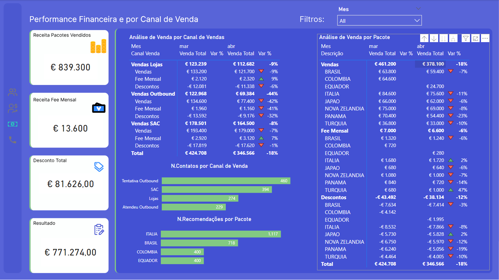

Dashboard Travel Agency
Context
I undertook this project as a solution for a technical case in a job interview. I was given an Excel dataset along with some business rules, and my task was to demonstrate an ETL (Extract, Transform, Load) process using SQL. The final step was to effectively present the results in Power BI, showcasing my ability to handle data and create insightful visualizations.
Step 1: Understanding the data source
You can see the original data clicking here.
Table SOCIOS
Columns
MES: Shows the date in "yyyymm" format.ID_CLIENTE: Shows the customer id.
Table CATALOGO_PACOTES
Columns
MES: Shows the date in "yyyymm" format.DESC_PACOTE: Describes the destination
PRECO: Describes the price of the package
Table RECOMENDACOES
Columns
MES: Shows the date in "yyyymm" format.CLIENTE: Shows the customer id.
PRECO: Recommended package name
Table ENTRADAS_CANAIS
Columns
MES: Shows the date in "yyyymm" format.CLIENTE: Shows the customer id.
FLG_ENTROU_SAC: Customers who contact via the customer support channel.
FLG_ENTROU_LOJAS: Customers who contacted the store directly.
FLG_TENTATIVA_OUTBOUND: Customers who contacted via Outbound Channel.
FLG_ATENDEU_OUTBOUND: Shows whether the outbound answered the call or not.
Table VENDAS_SAC
Columns
DATA_VENDA: Shows the sale date of the customer support channel.CLIENTE: Shows the customer id.
PACOTES_VENDIDOS: shows the quantity and destination of packages sold.
Table VENDAS_LOJAS
Columns
DATA_VENDA: Shows the sale date of the stores.CLIENTE: Shows the customer id.
PACOTES_VENDIDOS: shows the quantity and destination of packages sold.
Table VENDAS_OUTBOUND
Columns
DATA_VENDA: Shows the sale date of the Outbound Channel.CLIENTE: Shows the customer id.
PACOTES_VENDIDOS: shows the quantity and destination of packages sold.
Step 2: Business rules
A Portuguese travel agency sells travel packages to various destinations, offering two types of clients:
Members: Customers who have access to special benefits, notably discounts on the purchase of travel packages:
- 10% discount on the purchase of the 1st package of each month;
- An additional 2% discount for each extra package purchased in the same month (i.e., a 12% discount on the 2nd package, 14% on the 3rd package, etc.) - note: if the purchase of packages at different prices occurs on the same day, it is considered that the 1st packages purchased are those with the higher price.
Non-Members: Customers who do not have access to special benefits, buying travel packages at the standard price.
Additionally, the agency makes available/promotes the sale of travel packages through 3 commercial channels:
- Telemarketing Outbound: a channel that contacts customers to promote the sale of travel packages;
- Customer Service Desk: channel which makes calls for customer service and clarification of doubts/problem-solving, always seeking, where possible, to promote the sale of packages;
- Stores: with a similar objective to the Customer Service Desk, to promote package sales in person.
Lastly, in order to support sales in each of these channels, considering what is most interesting, taking into account the knowledge about the customer, should always be considered.
Step3: Business Problem
Question #1: How many members did the agency have per month, from December 2020 to April 2021? How many new members did it gain each month and how many did it lose?
To answer this question, you should use Excel, seeking to have a process that can be automatically replicated for the following months.
Question #2: What is the amount of revenue that the travel agency managed to achieve in the months of March and April 2021?
To answer this question, you should use SQL, looking to have a process that can be automatically replicated for the subsequent months.
Question #3: In April 2021, there was a significant decrease in revenue compared to the previous month. Based on the available information, what factors justify this evolution and what is their weight?
For each of these questions, the reasoning/intermediate steps (using, for example, Word or Excel) that allowed you to reach the presented results should be explained.
Challenge - Travel Agency
Challenge #1: Create a dashboard in Power BI (or an equivalent tool) to demonstrate the main data available from the travel agency:
- Number of members and monthly variation
- Revenue from various sources each month
- Revenue evolution per month, considering the various factors that can influence it (Products, Channels, etc.)
Challenge #2: If you were asked to create a process to daily update the information from the travel agency (considering that volumes were 1000x higher than those available as an example), what tools and technologies would you suggest for creating this process? Would you be able to create a diagram of how you would structure this process?
Step4: Data Modeling
The first step was to define the potential fact and dimension tables. After that, it was necessary to process the data, extracting relevant information for the fact table and creating keys to link with the dimension tables, as well as the necessary columns according to business rules. I chose to use views that will be sent to Power BI.
You can view all the queries used for data transformation by clicking here.
Tables before modeling
Fact Sales after transformation
To improve performance, I decided to create the dimensions within SQL and bring all the facts and dimensions into Power BI directly. This way, I avoided creating additional data processing steps in Power Query. Additionally, the calendar table was created in Power BI to manage dates effectively.
Final Modeling
The final model was a star schema with the fact tables at the center and the dimension tables surrounding it.
You can download the backup database clicking here.
Step5: Data Visualization
The final step was to answer the business questions in a visual and clear manner for the end audience. At the end of each panel, access to the DAX measures used is provided.
Pane 1
Pane 2
Pane 3
Pane 4
DAX Measures
Panel 4 is a summary of the status of members and non-members. Since they are straightforward measures and already detailed in other panels, I decided not to include them.